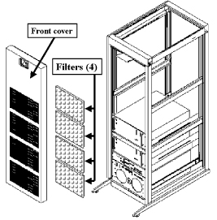
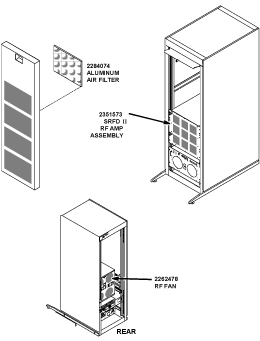

Operating Documentation
Direction 5133330-3, Rev# 14
Signa EXCITE HD 3.0T Service Methods
Module Version 1.0, Version Date 5/15/07
Operating Documentation |
| Required Persons | Preliminary Reqs | Procedure | Finalization |
|---|---|---|---|
| 1 | Not Applicable | Not Applicable | Not Applicable |
| Item | Qty | Effectivity | Part# | Manufacturer | |
|---|---|---|---|---|---|
| Standard Hand Tool Set | 1 | - | - | - | |
| ||||
| Electrocution Hazard! | ||||
| Dangerous voltages are present inside the rf cabinet when energized | ||||
| Remove power from the rf cabinet at the PDU and then lock out tag out the pdu. |
Turn the recessed screw at the top center of the front cover 1/4 turn counterclockwise to release the cover latch.
Tilt the top of the front cover forward, and lift up and out to remove the cover for access to the filter(s).
Remove each filter by lifting up slightly and pulling bottom edge outward.
Inspect the filter for dust build-up, and replace as required.
First insert the filters up and into the top bracket, then drop down into lower bracket, keeping the intake side (side with cleaning instructions) facing the door.
Probe Fans (2176114, 1.5T ), on the front of the RF Amplifier, with a small ty-wrap to make sure they are operating. See Illustration 1 for the 1.5T.
Illustration 1: 1.5T SRF Cabinet Front Cover & Filter Location

Replace the front cover on the cabinet by inserting the lower cover lip behind the shoulder bolts at the bottom of the cabinet and swinging the top of the door into the spring loaded "slam-latch".
Turn the recessed screw at the top center of the front cover 1/4 turn counterclockwise to release the cover latch.
Tilt the top of the front cover forward, and lift up and out to remove the cover for access to the filter(s).
Remove each filter by lifting up slightly and pulling bottom edge outward.
Inspect the filter for dust build-up, and replace as required.
First insert the filters up and into the top bracket, and then drop down into lower bracket, keeping the intake side (side with cleaning instructions) facing the door.
Probe the four (4) Fans (2262478), on the rear of the SRFD II Module, with a small ty-wrap to make sure they are operating. See Illustration 2-7.
Illustration 2: 1.5T SRFD II Cabinet Filter & Fan Locations

Replace the front cover on the cabinet by inserting the lower cover lip behind the shoulder bolts at the bottom of the cabinet and swinging the top of the door into the spring loaded "slam-latch".
Refer to the MKS vendor manual for fan locations. 
No other steps are available for 3.0T.
No finalization steps.